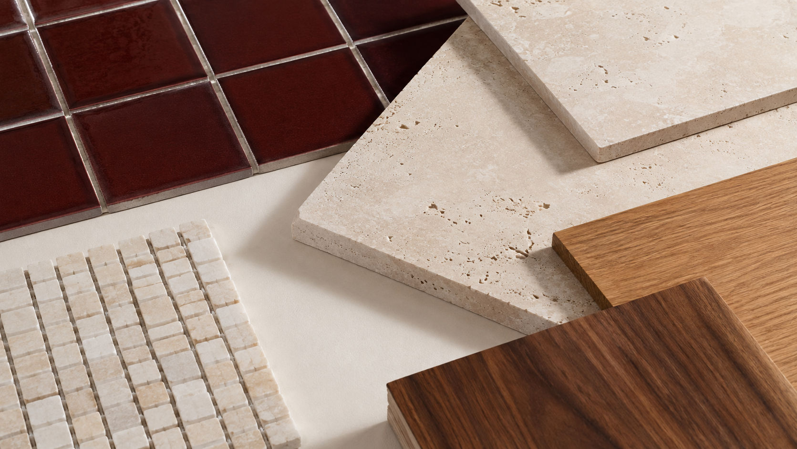

MOOD FINDER / STEP 01
설명하기 어려운 취향을
세 장면으로 찾아보세요.
마음이 먼저 가는 카드를 눌러보세요. 정답은 없습니다.YOUR MOOD / 01
Rich & Warm
깊은 색 한 점과버건디 유광 타일을 중심으로 크림과 원목을 넓게 사용하면 대담하지만 편안한 공간이 됩니다.
따뜻한 재료의 조합.
STEP 02 / MIX THE MATERIALS
선택한 색에
서로 다른 촉감을 더합니다.

- 60BASE
눈이 쉬는 차분한 바탕
- 30TEXTURE
공간에 온도를 만드는 재료
- 10ACCENT
기억에 남는 한 가지 색
STEP 03 / BRING YOUR REFERENCES
마음에 드는 사진 세 장을
상담에 가져오세요.
사진 속 공통 색, 표면, 조명과 형태를 읽어 우리 집에 구현할 수 있는 조합으로 좁혀갑니다.NEXT / SAVE YOUR MOOD
당신이 고른 장면에서
대화를 시작합니다.
선택한 무드와 현장 사진을 함께 보내주세요.MOOD CONSULTATION ↗
운영자 확정 후 상담 채널이 연결됩니다.